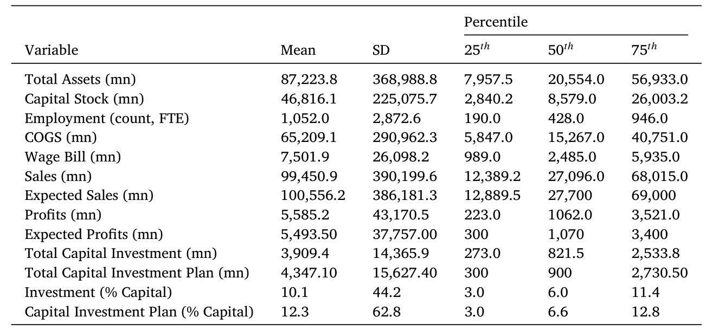
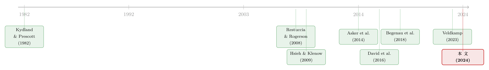

不确定性不是宿命：当公司学会了「边走边改」的资本预算
本文读的是 Charoenwong, Kimura, Kwan & Tan (2024, Journal of Financial Economics)：宏观与金融里主流的「时间到建」模型假设投资一旦拍板就难以更改，于是不确定性必然压低企业价值与总生产率。但现实里的资本预算包含两件事——事前花钱买信息、事后随状态改主意——它们能把这种损失大幅抵消。作者用一份罕见的日本企业「预测—计划—实现」微观面板，加上一个内生信息获取的一般均衡投资模型，算出：仅投资弹性一项就把不确定性造成的总生产率损失削掉约 41%，而信息配置再贡献约 17%；更妙的是，弹性主要救了低生产率企业，信息则主要利好高生产率企业。
1 一架不肯起飞的 A380
2020 年春天，新冠疫情爆发刚两个月，阿联酋航空（Emirates）做了一件听上去很「亏」的事：它想取消已经下单的五架空客 A380。取消是要赔钱的——违约金高达 3.5 亿美元。但管理层算的是另一笔账：一旦长途大客流回不来，这几架巨无霸就是趴在停机坪上烧钱的过度投资。两害相权，宁可认赔违约金，也不愿被一笔做错的投资套牢。
这件事看似只是疫情里的一则商业新闻，却恰好戳中了宏观与金融学里一个根深蒂固的假设。在 Kydland 与 Prescott (1982) 之后，绝大多数研究投资动态的模型都接受所谓「时间到建」（time-to-build, TTB）：投资决策必须提前做出，且即便后来收到了新信息，也很难再改。这个假设的推论是干净而冷峻的——今天对未来基本面的预测一旦出错，就会带来投资过度或投资不足，从而压低企业价值，并在加总层面侵蚀总生产率（David et al., 2016; Bloom et al., 2018; Tanaka et al., 2020）。
可阿联酋的例子告诉我们：现实没那么死板。投资计划往往是可以随新信息调整的。技术上你确实没法瞬间造出一架飞机（TTB 的技术约束改不了），但你可以在「下单」和「真正付钱提货」之间，留出一道讨价还价、追加或削减的缝隙。这道缝隙，就是这篇论文想要量化的东西。
于是一个自然的问题是：如果公司根本不是被动地承受不确定性，而是会主动地用资本预算去化解它，那么文献里那些动辄"不确定性吃掉多少生产率"的数字，是不是被高估了？高估了多少？
2 把「资本预算」拆成两件事
作者的核心洞察是：现实中的资本预算（capital budgeting），其实同时干了两件事。
第一件是信息获取（information acquisition）。 在真正动手之前，公司会花成本去打听、调研、做市场预测，尽量把对当期生产率的判断做得更准。预测越准，按计划投出去的钱踩空的概率就越小。
第二件是状态依存的投资弹性（state-contingent investment / investment flexibility）。 计划做完之后，公司并不会闭眼执行。一旦观察到真实的当期生产率，它可以选择偏离原计划——多投或少投——只不过偏离也要付一点代价。
这两件事的关键区别在于时点：信息获取发生在「拍板之前」，目的是让计划本身更靠谱；投资弹性发生在「拍板之后」，目的是给执行留后路。一个是把伞撑在下雨前，一个是雨下了再决定要不要冲出去。
文献此前的毛病，是把这两件事拆开来单看，而且几乎只盯着信息摩擦。作者一针见血地指出：如果企业事实上能在收到实时信息后大幅调整支出，那么"只算信息摩擦"就会系统性地高估不确定性的代价。真正关键的一步，是把弹性和信息获取放进同一个模型里，看它们各自、以及合在一起，到底能把损失压下去多少。
（关于「主动适应」本身值多少钱，可参见《先举手的人：危机里，「主动适应」到底值多少钱？》；而关于资本预算里那条被企业刻意抬高的门槛，可参见《把「门槛」抬高，是为了在谈判桌上赢回来》。）
3 一份能同时看到「预测、计划、实现」的数据
要回答这个问题，最难的不是模型，而是数据。你需要同时观测到：企业事前怎么预测、计划投多少、最后实际投了多少。绝大多数公开数据只有最后一项。
作者的起点，是日本财务省（Japanese Ministry of Finance, MoF）一份独一无二的企业微观面板，由两套调查合并而成：企业景气展望调查（Business Outlook Survey, BOS）与法人企业统计（财务报表统计）。BOS 的妙处在于：企业在财年第一季度大约第六周时被问及对全财年的销售、利润和投资支出计划；到年末再被问一次实际的销售、利润与投资。投资的口径锁定在厂房、设备与不动产（plants, property & equipment, PP&E）的计划值与实现值。
更难得的是这份数据的质量：根据《日本统计法》，企业必须如实填报，大型企业的回应率高达 87%–89%。最终样本覆盖 2005–2016 财年的制造业企业，共 2,040 家，其中 46% 为上市公司、其余为私人公司，雇佣了约 700 万人，约占日本劳动力的 10%。所有变量在 1% 水平缩尾。

Table 1: reports the general characteristics of our sample, includ-
作者由此定义了全文的主角变量——投资计划偏离（investment plan deviation）：年末实际投资减去年初计划投资，再用期初资本存量做标准化。这个偏离若为零，可能意味着投资完全没有弹性，也可能意味着企业预测得太准、根本无需偏离。要把这两种情形分开，就必须先把「企业到底面对多大不确定性」量出来。
一个诚实的 caveat：调查里的投资只记录资本支出，所以那些计划撤资或实际撤资的企业会被记为投资为零。这种截断会把计划偏离往零的方向压。作者在附录中用模拟论证，这一偏误不至于实质性地改变结论——但读者心里要有数。
4 怎么把「不确定性」量出来
这是全文最技术、也最关键的测量环节。作者沿用 Hsieh and Klenow (2009) 的做法，假设企业用资本 \(k\) 与劳动 \(l\) 经营一个柯布-道格拉斯增加值生产函数（value-added production function），资本份额为 \(\alpha\)：
$$y = \tilde z\, k^{\alpha} l^{1-\alpha}$$
其中 \(\tilde z\) 是物理生产率。再假设企业面对弹性为 \(\eta\) 的等弹性需求曲线。给定 \(\alpha\) 与 \(\eta\)，就能用一个恒等式把生产率从「价格×产量」（即增加值 \(py\)）里倒推出来：
$$\tilde z = \frac{(py)^{\frac{\eta}{\eta-1}}}{k^{\alpha} l^{1-\alpha}}$$
这里有个测量上的小妥协：因为只看到收入和资产负债表项目，作者无法区分「收入生产率」和「物理生产率」（Syverson, 2011），于是干脆把 \(\tilde z\) 统称为「生产率」。带波浪号的 \(\tilde z\) 是从收入函数里剥出来的残差，混合了暂时性和持久性两种成分；后文模型里不带波浪号的 \(z\)，专指其中的暂时性成分。
接着，作者假设 \(\log \tilde z\) 服从波动率为 \(\sigma_\epsilon\) 的高斯 AR(1) 过程，且企业有理性预期——它们完全理解 \(\tilde z\) 的数据生成过程。于是不确定性的唯一来源，就是企业在做计划时看不到的那个当期创新项 \(\epsilon\)。把"实现的生产率"减去"预测的生产率"，就得到了生产率预测误差：
这个看似朴素的差值，是全文的支点：它不是研究者间接推断出来的，而是从企业自己报出的预测里直接读出来的。这正是这份日本数据相较以往研究（多用间接推断，如 David et al. (2016) 直接假定 TTB 为三年）的根本优势。
5 三个把模型逼出来的经验事实
有了这把尺子，作者抛出了三个层层递进的经验事实。
首先，企业的内部预测，远比 AR(1) 准。 横截面上，预测误差的标准差只有生产率波动率的约 49%。换句话说，在动手投资之前，企业已经自己消化掉了接近一半的不确定性。这直接打脸了"企业只能靠 AR(1) 这种机械外推来形成预期"的标准假设——这恰是无数投资模型的默认设定。
接着，一个自然的问题是：谁的预测更准？ 答案是：过去越能干的企业，预测越准。横截面上，过去生产率每高一个标准差，预测误差绝对值就低约 16% 个标准差。生产率高的企业，似乎天然拥有更强的"看清未来"的能力。这个相关性，后面会被模型升级成一个深刻的理论命题。
然后是弹性的直接证据： 在控制住年初的投资计划之后，实际生产率每高 1%，投资率就高约 2.1%。也就是说，企业并没有死守计划，而是在收到实时冲击后真的调整了支出——投资是有弹性的。
至此，数据已经把话讲清楚了：企业同时依赖信息获取（事实一、二）和投资弹性（事实三）来对冲不确定性。剩下的问题，就是把这两条机制各自的"功劳"分清楚——而这只能靠一个结构模型来完成。
6 模型：把资本预算装进新古典投资框架
作者搭了一个含异质企业、内生信息获取与资本预算的一般均衡（general equilibrium）新古典投资模型。它的精髓，是把"投资"这件事切成了三段，并在其间嵌入 TTB：
- 计划阶段。 企业看不到当期生产率，只能用过去的生产率，再加上花钱买来的新信息，去预测当期生产率，并对部分投资做出初步承诺。
- 中间阶段。 企业观察到了真实的当期生产率，于是可以选择偏离初始计划——但偏离要付代价。这一段，就是投资弹性的来源。
- 最终阶段。 资本被装上、开始产出。计划与实际付款之间的这段时滞，正是作者对 TTB 的微观重构：TTB 一部分源于"计划已定、钱却尚未花出"的这段空窗。
关键的第三层设定是：信息获取的成本被允许随企业生产率而变，刻画了不同类型的企业拥有不同的"信息技术"。正是这三层设定，让模型能够同时复现上面三个经验事实。
论文 Section 3 的完整一般均衡方程偏技术（涉及贝尔曼方程、信息成本函数与市场出清条件），且不在本文据以写作的正文片段之内；为避免凭空杜撰符号，这里只严格复现作者在测量部分给出的原始方程（上节的生产率恒等式与预测误差定义），模型部分则按其经济结构逐层讲清。下面这个结论性命题，才是模型真正的"新东西"。
模型推出的新定理： 对一家企业而言，多获取「一单位」信息的边际收益，总是随其生产率递增。直觉是这样的——信息的价值在于让你把资本投到对的地方，而生产率越高的企业，同样一笔资本能榨出的产出越多，于是"把这笔资本投准"的回报也越大。所以：
信息与生产率，在生产中是互补（complements）的——无论在企业层面还是加总层面。
这一步逻辑上的反转极为漂亮：它把信息从一个外生给定的摩擦，变成了一种像物理要素一样、企业会主动配置的「无形生产要素」（intangible factor of production）。既然高生产率企业有更强的动机去买信息，整个经济中就会内生地长出一个信息的横截面分布——作者称之为信息配置（information allocation）。于是不确定性对总生产率的最终影响，就不只取决于"企业有多大弹性"，还取决于"信息这块资源在企业间是怎么分布的"。
7 主要结果：把损失分给了谁
模型校准（calibration）让经验矩与数据对齐后，给出了全文最有冲击力的几个数字。
基准世界里，不确定性造成的总生产率（TFP）损失约为 0.20%。 这个数字本身不大——但别急，关键在于和反事实的对比。
反事实一：关掉投资弹性。 作者构造了一个保留真实信息配置、却把投资完全锁死（complete inflexibility）的反事实经济。此时 TFP 损失跳升到约 0.34%。两相对照——
$$\frac{0.34\% - 0.20\%}{0.34\%} \approx 41\%$$
也就是说，仅投资弹性一项，就把不确定性造成的总生产率损失削掉了约 41%。在工资固定的前提下，这等价于把加总企业价值抬高约 1.13%。
反事实二：把信息「拉平」。 受"企业面对同质不确定性"这一标准假设的启发，作者再构造一个反事实：在保持信息获取总量与弹性程度不变的前提下，把信息分布退化成处处相同（degenerate distribution）。结果 TFP 损失升到约 0.24%，比基准高出约 20%。换算成对应的机制贡献，信息获取这条渠道把损失削掉了约 17%；在价格固定时，信息配置渠道把加总企业价值抬高约 0.32%。
但真正反直觉、也最漂亮的，是分布层面的发现：两条机制救的，根本不是同一批企业。
- 投资弹性的好处，主要落到低生产率企业头上。 它们更没本事提前看清未来，于是更依赖"事后改主意"这根救命稻草——弹性对它们而言是一份保险。
- 信息配置的好处，则几乎只归于极少数生产率极高的企业。 因为正是这些企业，才有最强的动机也最有能力去买信息——信息对它们而言是一根杠杆。
一个救济弱者，一个犒赏强者。于是全文的核心结论，可以收束成一句话：不确定性的代价并非宿命，资本预算会把它大幅化解；而化解的方式，恰恰沿着生产率的高低，被重新分配给了不同的企业。 把更多信息资源配给高生产率企业（正如数据中观察到的那样），会进一步降低不确定性的加总冲击——这也为"信息错配本身就是一种资本错配"提供了量化证据。
（这条"错配"的脉络，和《市场太「集中」，资本就会配错地方》与《投资于「错配」：那些看起来在乱花钱的公司，其实在赌一次跳跃》是同一片大陆上的不同山头。）
8 文献脉络
这篇论文站在三条河流的交汇处。
第一条是宏观里的「时间到建」传统。 自 Kydland and Prescott (1982) 起，TTB 几乎成了投资模型的标准假设，早期证据（Mayer, 1960 等）认为这段时滞主要是技术性的、不随商业周期变动。本文的贡献，是给 TTB 做了微观重构：时滞有一部分来自"计划已定、钱却未花"的空窗，而企业恰恰能在这段空窗里做状态依存的调整。
第二条是错配（misallocation）文献。 从 Restuccia and Rogerson (2008) 与 Hsieh and Klenow (2009) 的奠基之作，到 Asker et al. (2014)、David et al. (2016) 把不确定性、TTB 与资本调整摩擦列为错配之源——本文最直接地接续了这一支，但额外强调：信息配置本身就是资本错配的一个决定因素。
第三条是信息摩擦与「信息即资产」。 从 Sims (2003) 的理性疏忽，到 Begenau, Farboodi & Veldkamp (2018)、Veldkamp (2023) 把信息/数据当作企业资产来定价；同时 Tanaka et al. (2020) 等用企业预期调查发现"高生产率企业预测更准"。本文的独到之处，是把信息内生化，从理论上证明信息像无形资产一样、与生产率互补，并量化了信息配置作为加总效率来源的相关性。

9 评论与延伸（Q&A + 研究方向）
(a) 几个可能的疑问
Q：把损失削掉 41%，听起来很大，可基准损失才 0.20%——这值得大惊小怪吗？
关键不在绝对值，而在相对结构与方法论含义。
0.20%是已经内生了企业自救行为之后的"净"损失；若按旧文献那样关掉弹性，损失会高出四成多。这意味着既有文献在"只算信息摩擦"时，系统性地高估了不确定性的代价。数字小，恰恰是因为企业很能自救——这本身就是论点。
Q：信息获取与投资弹性，会不会只是同一件事的两种说法？
不是。二者的时点与功能不同：信息获取在拍板前、让计划更准；弹性在拍板后、给执行留后路。模型的价值正是把这两条渠道分离，并发现它们在生产率分布上指向相反的受益群体——若是同一回事，就不会出现"弹性救弱者、信息犒强者"的分化。
Q：用增加值反推生产率，再用它定义预测误差，这条链条可信吗？
这是最该警惕的一环。\(\tilde z\) 依赖于对 \(\alpha\) 和需求弹性 \(\eta\) 的取值，且无法区分收入生产率与物理生产率（Syverson, 2011）。好在作者的优势是有企业自报的预测，预测误差是直接读出而非间接推断的——这比 David et al. (2016) 那类"假定 TTB 三年"的做法更接近一手证据。但 \(\eta\)、\(\alpha\) 的设定误差会同时进入实现值与预测值，需关注其对量级的敏感性。
Q：日本制造业 2005–2016 的结论，能外推到别的经济体吗？
要谨慎。日本制造业资本密集、计划文化浓厚，"先做预算再执行"的色彩可能强于其他经济体；样本又只含大型企业（回应率高正是因其为强制调查对象）。弹性与信息获取的相对重要性很可能随行业与国别而变——这恰是后续可做的事。
Q：撤资被记为零投资的截断偏误，会不会把弹性低估了？
方向上会：截断把投资计划偏离往零压，从而低估了真实的弹性。作者用模拟论证其影响有限，但这意味着论文报告的
41%更可能是个下界——真实的弹性价值或许更大。这对核心结论是"友好"的偏误。
Q：「信息与生产率互补」这个定理，和直觉冲突吗——不是越差的企业越该多了解自己吗？
直觉上低生产率企业"更需要"信息，但模型说的是边际收益：信息让你把资本投准，而高生产率企业每单位资本的产出更高，投准的回报也更大，所以它们愿意付更多去买信息。这与物理要素的逻辑如出一辙——好钢用在刀刃上，信息也一样。
(b) 几个可能的研究问题与提案
1. 把「资本预算弹性」搬到公司债与信用市场。
【经济故事】债务融资的企业在做资本预算时，弹性会被债务契约（covenant）、再融资窗口约束。一个高弹性的企业，是否因为能更好地对冲不确定性，而享有更低的信用利差？【可行性】中。需要把本文式的"计划—实现"投资偏离，与企业债二级市场利差、评级变动对接；识别上可借助行业层面的不确定性冲击作为外生变动，但跨数据匹配是主要障碍。
2. 外资持有人是否改变了企业的「信息获取」激励？
【经济故事】外资机构往往带来更强的信息生产与监督。若外资持股提高了企业事前预测的准确度，本文的"信息配置"渠道就会被外资结构性地重塑。【可行性】中。需要持股数据（如各国版 13F）与企业预测准确度的代理变量；识别可考虑指数纳入等准自然实验，难点在于找到企业内部预测的可观测代理。
3. 流动性冲击下，投资弹性是「保险」还是「枷锁」？
【经济故事】本文说弹性主要救低生产率企业；但当企业自身面临流动性紧约束时，"事后改主意"反而可能因缺钱而无法执行。弹性的价值，是否在流动性枯竭期被反转？【可行性】高。可用 2008、2020 等流动性冲击作为时点，结合企业现金持有与信贷可得性，检验弹性价值的状态依存性，与本文模型的中间阶段直接对话。
4. 把「信息即无形资产」放进企业估值。
【经济故事】若信息真像无形资本一样与生产率互补，那么高信息配置的企业应享有估值溢价。能否从财报或预测准确度里提取出"信息资本"，并检验其对 Tobin's q 的解释力？【可行性】中。概念上接 Veldkamp (2023)；难点是信息资本无直接计量，需要结构估计或预测准确度代理，外推到上市公司样本时还要处理选择性。
5. 用机器学习重估「预测准确度的生产率梯度」。
【经济故事】本文发现过去生产率高的企业预测更准（每标准差对应误差低
16%标准差）。这条梯度是源于"更好的信息技术"，还是"更稳的基本面"？【可行性】高。可在同一面板上，用企业特征训练预测模型，分解预测准确度中"可由特征解释"与"残余能力"两部分，检验梯度是否在控制基本面波动后依然存在。
10 我的判断
贡献。 这篇论文最实在的贡献有两点。其一是数据：一份覆盖大量公私企业、同时含"预测—计划—实现"的强制性长面板，让"企业自报预测误差"第一次能被直接观测，而非靠间接推断硬凑。其二是概念：把资本预算拆成"事前买信息 + 事后改主意"两条渠道，证明二者沿生产率分布救济不同企业，并把信息抬升为一种会被主动配置的无形要素。"信息与生产率互补"这个定理干净有力，是全文的灵魂。
对识别的担忧。 我最不放心的，是从增加值反推生产率这条链条对 \(\eta\)、\(\alpha\) 的依赖，以及撤资截断带来的偏误——后者方向友好（让 41% 更像下界），前者却可能同时污染量级的两端。此外，结论高度依赖"理性预期 + 高斯 AR(1)"这组结构假设；一旦企业的预期是有偏的（行为金融的大量证据指向这一点），"预测误差即不确定性"的解读就要打折。样本限于日本大型制造业，外推性也需谨慎。
后续想看到的。 我最想看到三件事：一是把这套"弹性 vs. 信息"的分解搬到信用市场，看弹性高的企业是否真的享有更低的利差；二是在流动性约束下检验弹性价值是否会反转——毕竟"能改主意"的前提是"改得起"；三是放松理性预期，看当企业系统性地过度反应或外推时，本文的 41% 会缩水还是放大。把"不确定性不是宿命"这句话，验证到一个钱更紧、人更不理性的世界里去——那才是它真正的试金石。
参考文献
- Asker, J., Collard-Wexler, A., & De Loecker, J. (2014). Dynamic inputs and resource (mis)allocation. Journal of Political Economy 122, 1013–1063.
- Begenau, J., Farboodi, M., & Veldkamp, L. (2018). Big data in finance and the growth of large firms. Journal of Monetary Economics 97, 71–87.
- Charoenwong, B., Kimura, Y., Kwan, A., & Tan, E. (2024). Capital budgeting, uncertainty, and misallocation. Journal of Financial Economics 153, 103779.
- Kydland, F. E., & Prescott, E. C. (1982). Time to build and aggregate fluctuations. Econometrica 50.
- Mayer, T. (1960). Plant and equipment lead times. Journal of Business 33, 127–132.
- Restuccia, D., & Rogerson, R. (2008). Policy distortions and aggregate productivity with heterogeneous establishments. Review of Economic Dynamics 11, 707–720.
- Sims, C. A. (2003). Implications of rational inattention. Journal of Monetary Economics 50, 665–690.
- Syverson, C. (2011). What determines productivity? Journal of Economic Literature 49, 326–365.
- Tanaka, M., Bloom, N., David, J. M., & Koga, M. (2020). Firm performance and macro forecast accuracy. Journal of Monetary Economics 18, 1–38.
- Veldkamp, L. (2023). Valuing data as an asset. Review of Finance.